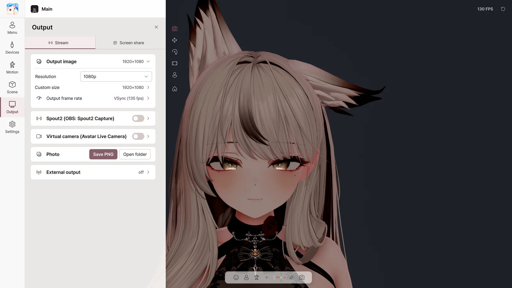

9. Output#
On the Output page you send the avatar image to other programs. There are two tabs: Stream and Screen share.
| Destination | Method |
|---|---|
| OBS (transparent background) | Spout2 |
| Camera in Discord, Zoom or Teams | Virtual Camera |
| Streaming a game on Discord | Screen share |
| Other motion apps | VMC out |
| Photos | Save PNG |
Only the avatar and background are sent; Avatar Live's menus are not. Output continues even when the window is minimized or hidden to the tray.
Stream#

Output image#
| Item | What it does |
|---|---|
| Resolution | 720p · 1080p · 1440p · 4K · portrait |
| Custom size | Any size you like |
| Output frame rate | The output frame rate |
Basic goes up to 1080p and shows a watermark. Pro goes up to 4K with no watermark.
Spout2 → OBS#
- Turn on Spout2.
- In OBS, install the Spout2 plugin, add a Spout2 Capture source and choose Avatar Live.
- Transparent background: set the Avatar Live background to Transparent, and choose Composite with alpha in OBS.
| Item | What it does |
|---|---|
| Sender name | The name shown in OBS |
| Send transparency (alpha) | Send a transparent background |
Virtual camera#
- The first time only, click Install the virtual camera… (you are asked for administrator permission).
- Turn on Virtual Camera.
- In Discord, Zoom or similar apps, choose Avatar Live Camera as the camera.
| Item | What it does |
|---|---|
| Mirror the image | Flip left and right |
| Register again as 'Avatar Live Camera'… | When the camera shows under a different name |
- Discord looks for cameras only when it starts. If the camera is not in the list, quit Discord completely and open it again.
- Transparent backgrounds are not supported (use a chroma key background).
- Before moving or deleting the installation folder, run
VirtualCamera\Uninstall.bat.
Photo#
Save PNG saves the view without the UI, and Open folder opens the folder it is saved in. A transparent background is saved as transparent.
External output (VMC)#
| Item | What it does |
|---|---|
| VMC output (to another app) | Send the avatar's pose and expressions to another app |
| Address / Port | The address of the receiving app |
| Blend shapes | Send expressions too |
VMC output is expected to work, but it is an experimental feature: the receiving apps have not yet been tested in the developer's environment.
Screen share#

Shows your Discord friends the game + avatar + sound, while you see only the game. No OBS needed.
How to use#
- Under Share target, choose Game or Display.
- Turn on Screen share.
- In Discord, choose Screen Share → Applications → Avatar Live Share Output and turn on sound.
- Adjust the avatar's position and size in the preview.
⚠️ Do not run Avatar Live as administrator. Discord will show a black screen.
Share status#
| Item | What it does |
|---|---|
| Screen share | On / off |
| Resolution / Frame rate | The quality sent to Discord |
Share target#
| Item | What it does |
|---|---|
| Game | Choose the game window to share (found again even after the game restarts) |
| Display | Share a whole monitor |
| More sources (Pro) | Layer more windows or monitors on top (Chapter 11) |
💡 If the game shows up black, try switching the game to borderless window or windowed mode.
Audio#
| Item | What it does |
|---|---|
| Game audio | Send only the game's sound (Discord calls and notification sounds are excluded) |
| Desktop audio / Added apps only / No audio | The sound to send when sharing a display |
| + Add an app | Add sound from other apps such as music, with per-app volume |
For share audio to go out, you need a virtual playback device that you do not listen to, such as Steam Streaming Speakers or VB-Audio CABLE.
Avatar overlay#
| Item | What it does |
|---|---|
| Avatar overlay | Show the avatar on the shared screen |
| Preview | Drag to move, corners to resize, handle to rotate, Alt + edge to crop |
| ↙ ↓ ↘ ↖ ↗ ◎ | Quick positions |
| Size / Opacity / Rotation | Adjust with numbers |
| Flip and snapping | Flip horizontally and vertically, lock aspect ratio, snap |
| ⛶ | Edit on a larger screen |
Advanced#
| Item | What it does |
|---|---|
| Force capture method | Auto / Window / Display |
| Source trim | Crop the shared screen |
| Discord audio device | The device that plays the share audio (do not choose headphones or speakers) |
| Audio delay | Sync sound with video |